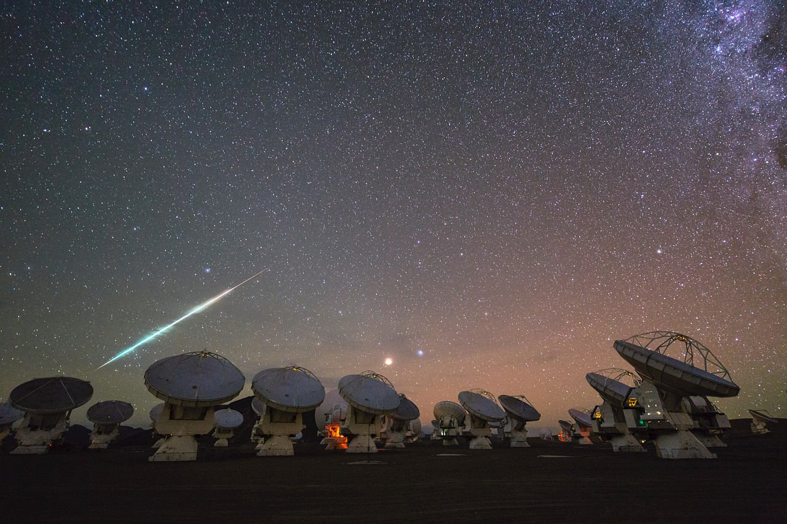
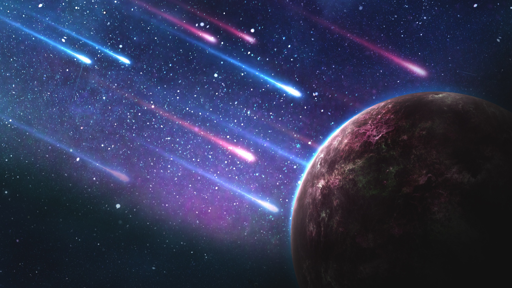
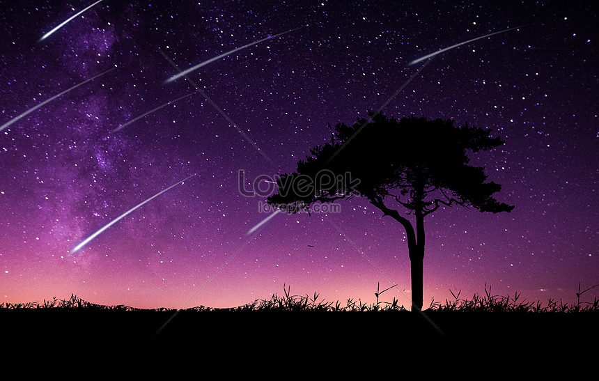

SAO BĂNG
Sao băng, hay sao sa, là đường nhìn thấy của các thiên thạch và vẫn thạch khi chúng đi vào khí quyển Trái Đất (hoặc của các thiên thể khác có bầu khí quyển). Trên Trái Đất, việc nhìn thấy đường chuyển động của các thiên thạch này là do nhiệt phát sinh ra bởi áp suất nén khi chúng đi vào khí quyển. (Lưu ý là rất nhiều người cho rằng đó là do ma sát, tuy nhiên ma sát ở các tầng cao của khí quyển là không đủ lớn để có thể làm nóng thiên thạch đến mức phát sáng, do mật độ không khí ở đây rất loãng). Khi thiên thạch chuyển động với vận tốc siêu thanh, nó sinh ra các sóng xung kích (shock wave) do nó "va chạm" với các "hạt" của khí quyển và nén chúng nhanh hơn so với chúng có thể dãn ra khỏi đường chuyển động của thiên thạch. Với vận tốc cao như vậy, các phân tử không khí trên đường đi của thiên thạch bị nung nóng bởi sóng xung kích, hoặc bị nén quá mạnh đến mức nhiệt độ của sóng xung kích tăng lên đến hàng ngàn độ và làm cho các thành phần vật chất của thiên thạch bị nung đến nóng sáng. Những sao băng sáng, thậm chí sáng hơn cả độ sáng biểu kiến của Kim Tinh, đôi khi được gọi là quả cầu lửa.

Ảnh. Hình ảnh Sao Băng rơi...
|

Ảnh. Hình ảnh Sao Băng rơi...
|

Ảnh. Hình ảnh Sao Băng rơi...
|
Sao băng là đường đi có thể nhìn thấy của một thiên thạch, tiểu thiên thạch, sao chổi hoặc tiểu hành tinh, bị phát sáng xuyên qua bầu khí quyển của Trái Đất, sau khi bị đốt nóng đến phát sáng do va chạm với các phân tử không khí trong bầu khí quyển trên cao, tạo ra một vệt sáng theo chuyển động nhanh của nó.
Kỷ lục
Có rất ít thiên thạch tồn tại trên mặt đất để chúng ta quan sát được. Hầu hết chúng ẩn sâu dưới các lớp đất, chỉ để lại những cái hố khổng lồ và sâu hoắm, giúp chúng ta biết chúng ở đâu mà thôi. Hố sâu nhất được biết tới hiện nay nằm ở Wilkes Land, thuộc châu Nam Cực, rộng 150 dặm, sâu 0,5 dặm. Các nhà khoa học ước đoán thiên thạch tạo nên hố này nặng tới 14 tỉ tấn và di chuyển với tốc độ 44.000 dặm/h khi va chạm vào bề mặt Trái Đất. Thiên thạch lớn nhất hiện được trưng bày trong Bảo tàng Hayden Planetarium ở Thành phố New York, nặng 34 tấn. Nó được phát hiện năm 1897 ở gần bờ biển phía tây đảo Greenland. Người ta ước tính mỗi năm chỉ có khoảng 150 vụ thiên thạch đụng vào bề mặt Trái Đất và việc con người bị những thiên thạch này đụng phải là vô cùng hiếm hoi.